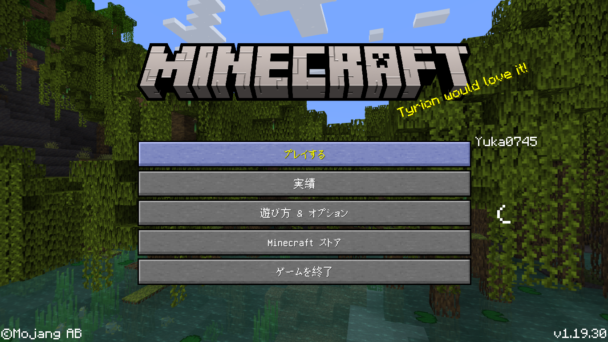
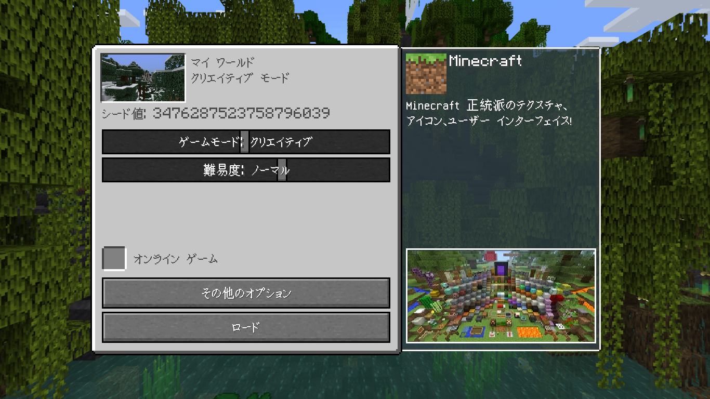
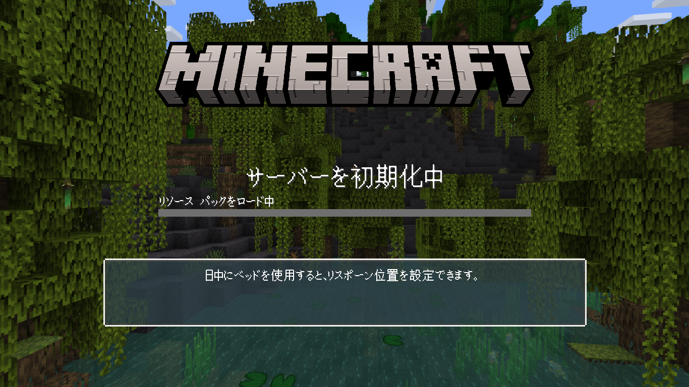
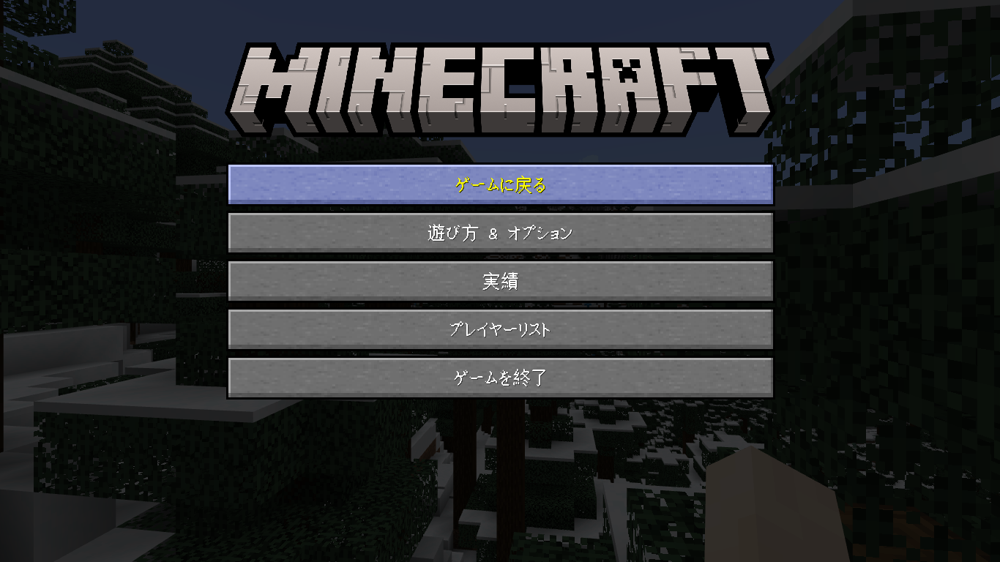
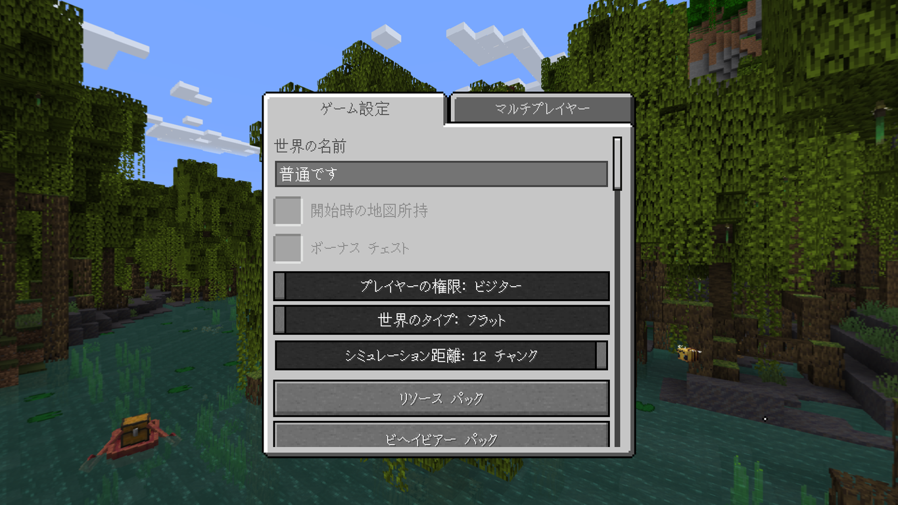

Legacy GameConsoleUI
コンソールエディション(WiiU, 旧Switch, PS3, 旧PS4, Xbox360, 旧Xbox One)のようなUIにするリソースパックです!
コンソールエディション(WiiU, 旧Switch, PS3, 旧PS4, Xbox360, 旧Xbox One)のようなUIにするリソースパックです!
このアドオンの説明
このリソースパックは、スタート画面などのUIをコンソール風のUIにすることが出来ます!
v1.1.1 アップデート！
変更点と追加:
- 1.20以降で看板のテキスト編集画面が開けないバグを直しました。
- Chromebookで、パック情報画面が開けないバグを直しました。
このアドオンの使い方
他にUI変更リソースパックを使用している場合、Legacy GameConsoleUIを上位にしないと上手く動作しない可能性があります。
どんなUIになる？

スタート画面

ワールドロード画面

プログレス画面

ポーズ画面

ワールド設定画面

クリエイティブインベントリ画面
注意
ただし、説明欄など任意の場所にこのページへのリンクや、Legacy GameConsoleUIからコピーしたことをしっかり明記してください。
なお、ワールドやサーバーのリソースパックに適用することも出来ますが、おすすめできません。
ワールドに入った人の混乱や誤解などを招く可能性があるので、適用しないことをおすすめします。
ダウンロード
ここをクリックしてダウンロードする!